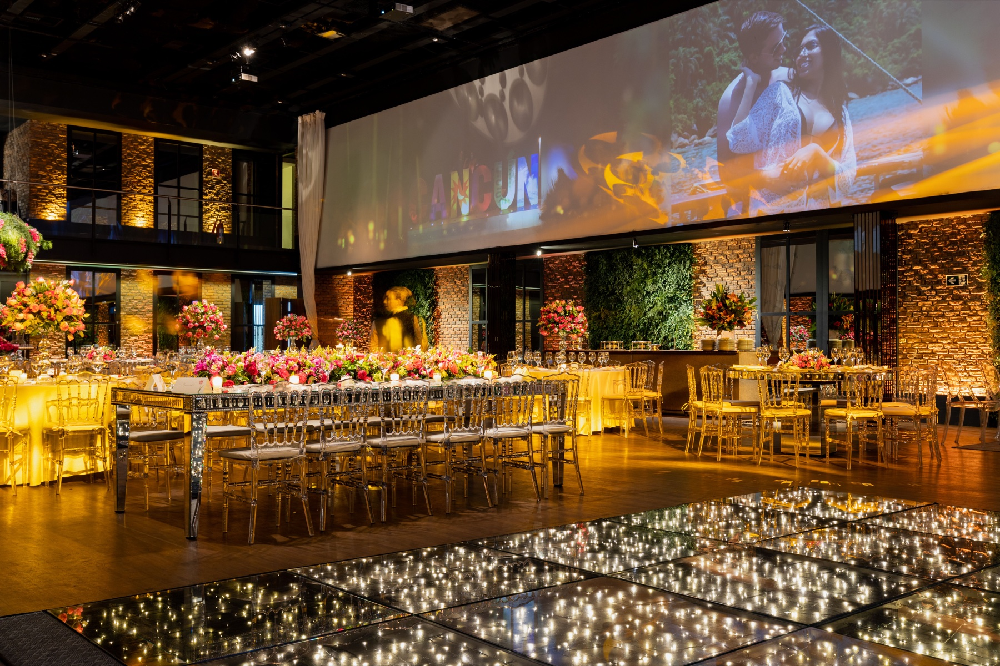
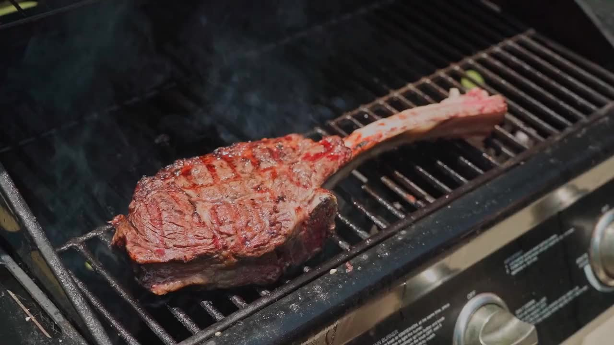
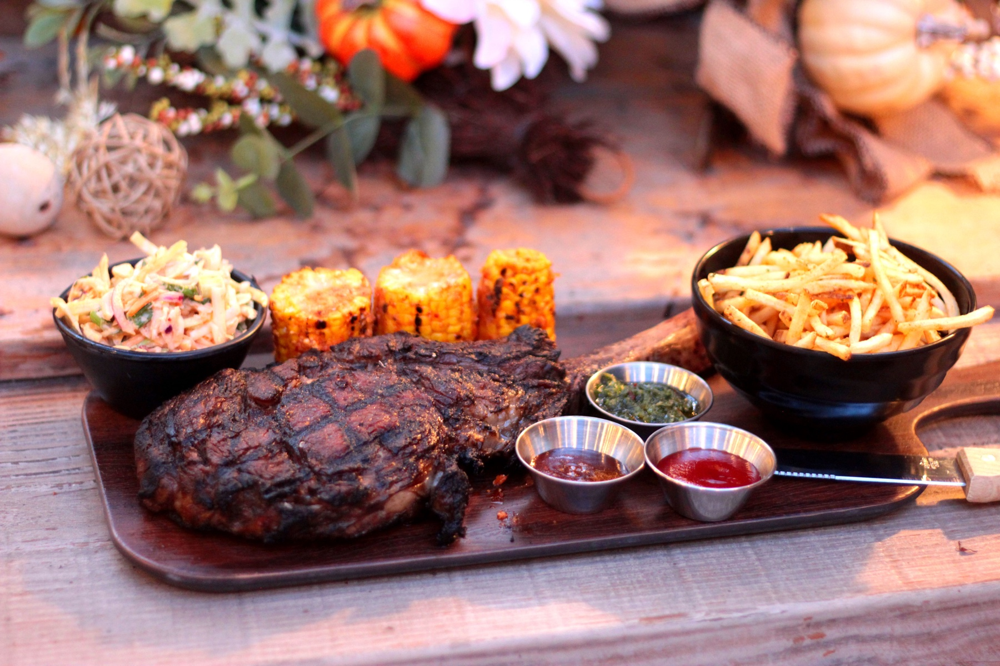
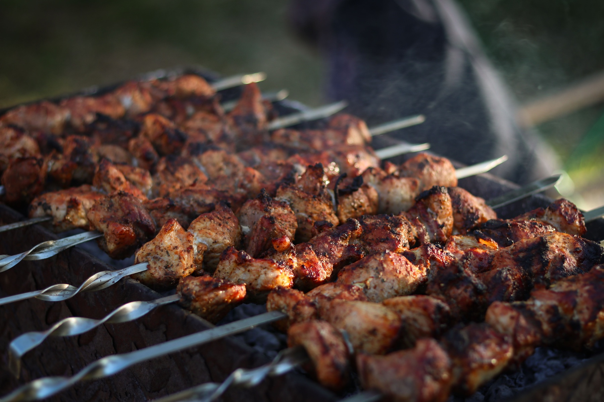
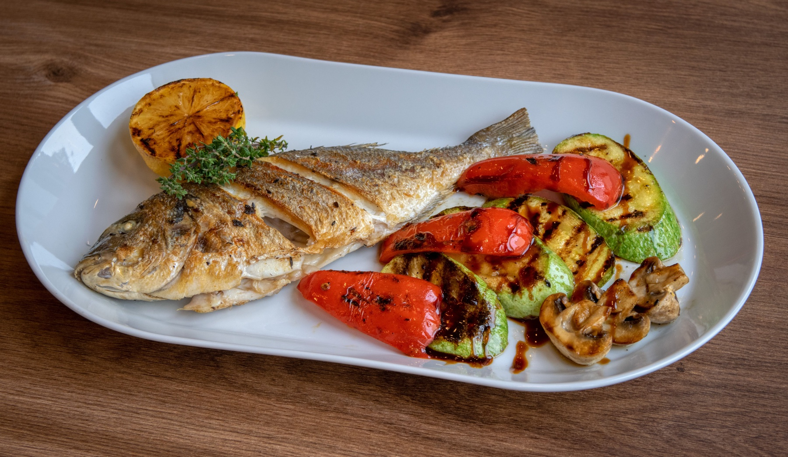

Хорошо быть
в своей компании
Мясо с огня. Рыба с дымком.
И повод собраться за одним столом.
Кейтеринг для ваших событий
Свадьба
Свадебный обед в саду, общий стол и блюда с открытого гриля. Меню и подачу подберём под настроение вашего дня.
Обсудить мероприятиеХОРОШО, КОГДА ВСЕ ВМЕСТЕ
Ваш повод
Наш огонь
День рождения на даче. Ужин после «да».
Выезд всей командой. Или просто встреча,
которую давно откладывали.
Вы выбираете повод — остальное обсудим
01 — Сначала
Знакомимся
Дата, место, гости и пожелания. Можно начать с простой идеи — детали соберём вместе.
02 — Потом
Подбираем
Меню, подачу и формат обслуживания. Стоимость зависит от состава заказа и особенностей площадки.
03 — Перед встречей
Договариваемся
Согласуем смету, тайминг и состав работ, включая персонал, оборудование, логистику и уборку.



Стейк с гарниром
ВОПРОСЫ И ОТВЕТЫ
О чём часто спрашивают
Главное о меню, стоимости
и подготовке мероприятия.
Как рассчитывается стоимость?+
Индивидуально: учитываем количество гостей, меню, формат подачи, персонал, оборудование и особенности площадки. Состав сметы согласовываем до мероприятия.
Можно ли адаптировать меню?+
Расскажите о предпочтениях и ограничениях гостей. Обсудим возможные блюда и согласуем подходящее меню.
Что нужно для приготовления на огне?+
Понадобится оценить площадку и возможность безопасного использования открытого огня. Условия и оборудование обсуждаем при подготовке предложения.
Когда бронировать дату?+
Сообщите желаемую дату заранее. Доступность, сроки согласования и условия бронирования необходимо подтвердить при обсуждении заказа.
С чего начнём?
Расскажите, какой праздник вы задумали.
Соберём детали для вашего предложения.
До встречи за столом.